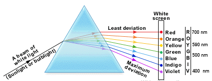
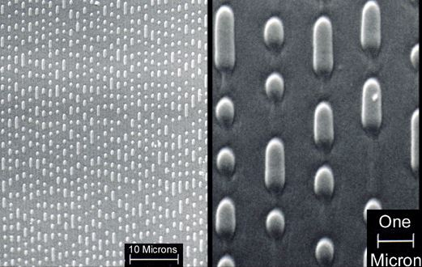
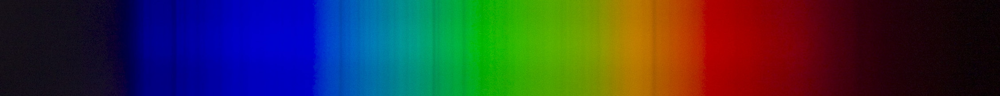
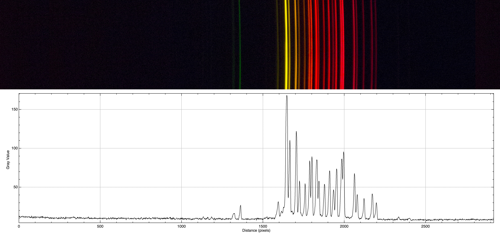
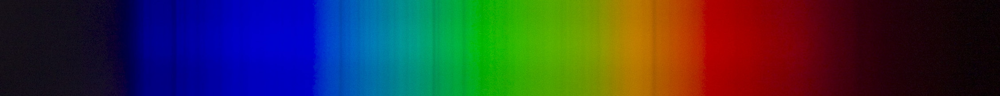
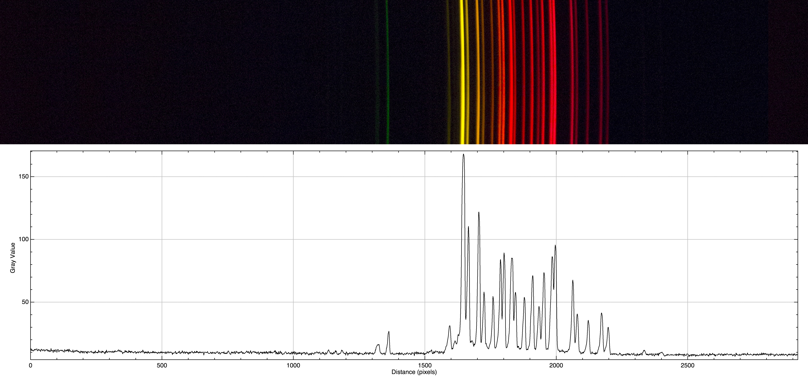

A spectroscope, in this case "optical spectroscope", is an instrument used to study properties of matter like the composition. I briefly show you how it works. You maybe know that light (like the Sun light) is composed by a lot of colours, and different colours means different wavelengths. If a beam of Sun light passes through a prism, you will see a refracted pattern of colours that goes from red to violet, like a rainbow. This is a property of light: different colors (wavelengths) get refracted with a different angle, so the initial beam it's splitted in all it's components.
Now if you consider a gas and give energy to it, it begins to emitt photons. These photons have only a specific energy and wavelength then the diffracted beam of this radiation will be not a continuous rainbow pattern but will be composed by a certain number of separated line. These lines are called emission line and form the so called emission spectrum. Every atom has a different emission spectrum (and in general every molecule). It's like Nature has a fingerprint for each atom.
Exist also the absorption lines. An absorption line is produced when photons from a hot, broad spectrum source pass through a cold material. The intensity of light, over a narrow frequency range, is reduced due to absorption by the material. These lines looks like a "hole" in a continuous spectrum.
The study of the emission and absorption lines allow us to determine the composition of the light source (like a star or a light bulb) or the composition of the medium in which light beam pass through.
The spectroscope I built use the CD diffraction grating instead of a prism. The surface of a CD has many small pits in the plastic arranged in a spiral, a single pit has the size of about 1 micrometer, as you can see in the image below.
This pattern reflect a light beam and split it into it's components. You can use a CD as a "light splitter" just after removing the reflective layer on it. You can do it with a piece of scotch tape: apply the tape on the reflective layer and quickly remove it.
I glued the grating to one side of a paper tube of 5 cm in diameter and 30 cm in length. At the opposite side I made a very thin slit using two razor blades. Et voilà, in this way I made a (rough) spectroscope. With my DSRL camera I can take some picture.
The image below is a photo of a fluorescent light spectrum and the profile plot of the greyscale intensity obtained with ImageJ software.
 The next image show the spectrum of the Sun, with the absorption lines well visible.

In the following image I tried to photograph the emission lines of a neon lightbulb: the light of a neon lightbulb is very faint, so I made a long exposure (about 5 seconds of exposure) and this is the result.

The next image show the spectrum of the Sun, with the absorption lines well visible.

In the following image I tried to photograph the emission lines of a neon lightbulb: the light of a neon lightbulb is very faint, so I made a long exposure (about 5 seconds of exposure) and this is the result.
